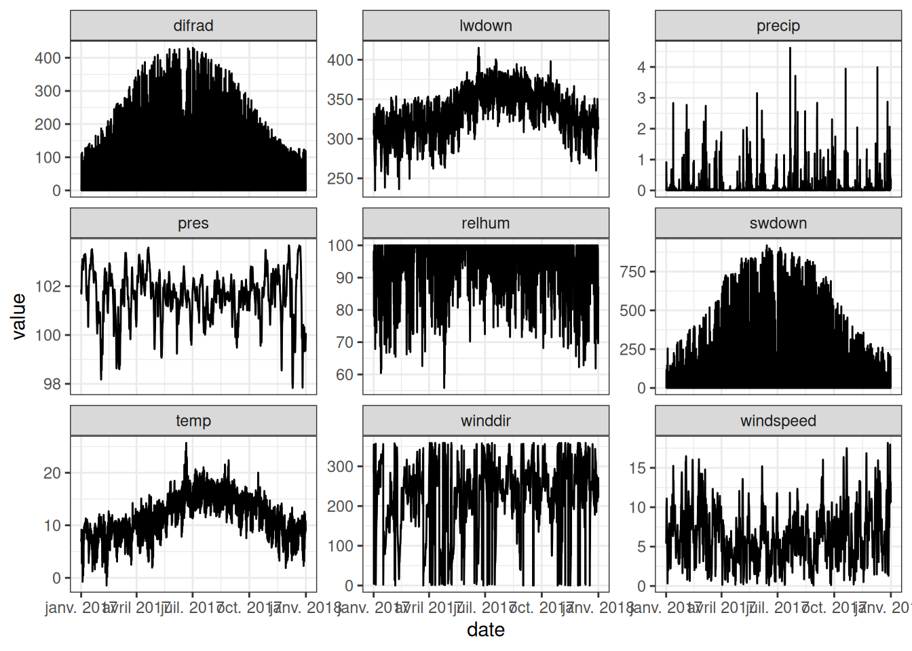
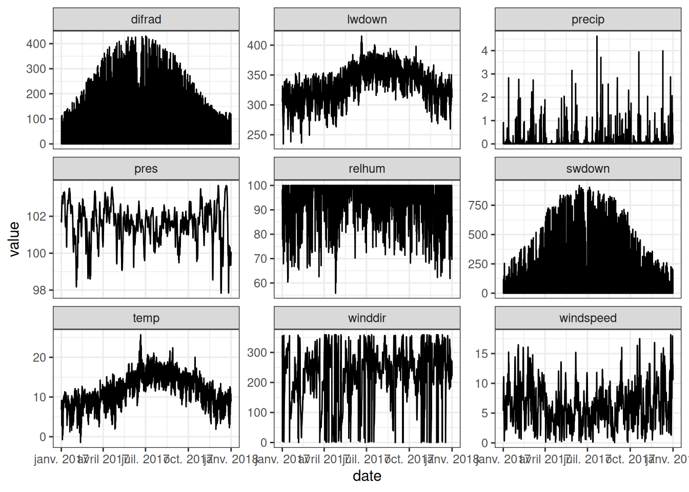
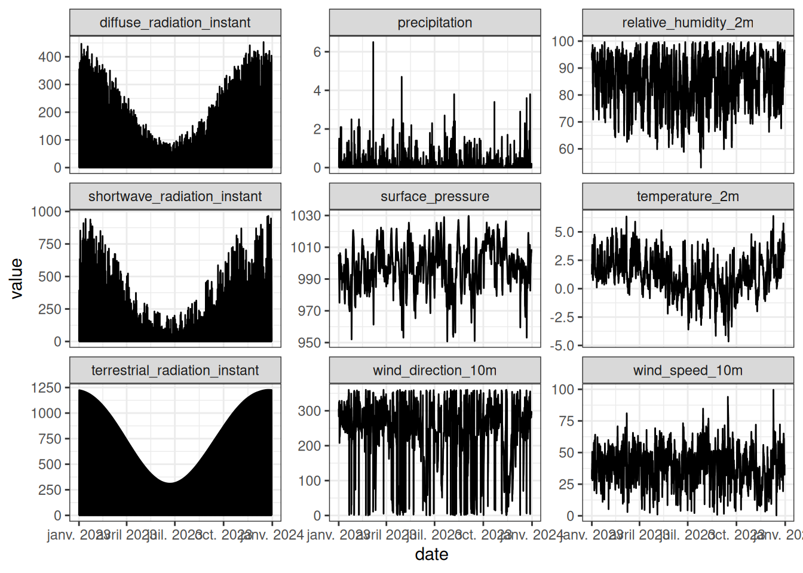
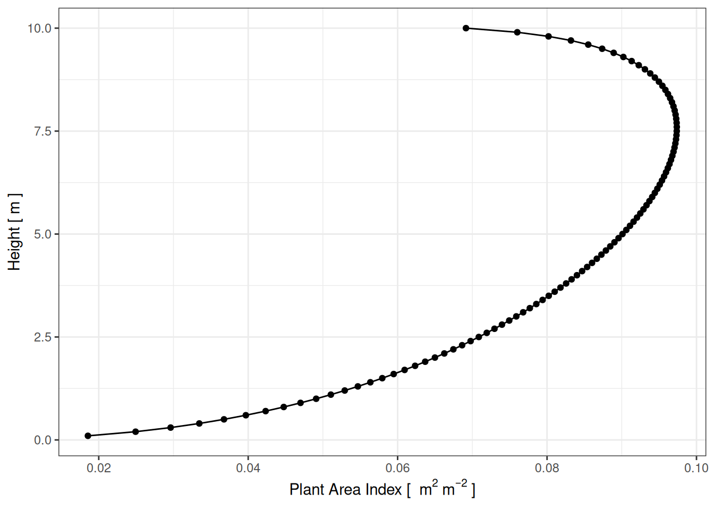
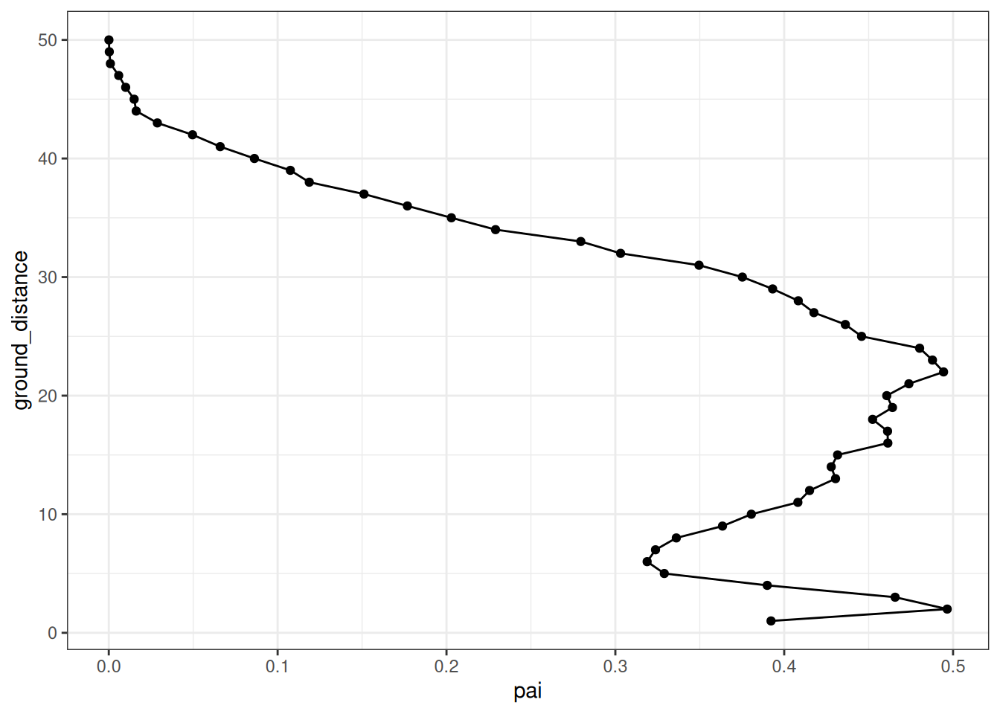
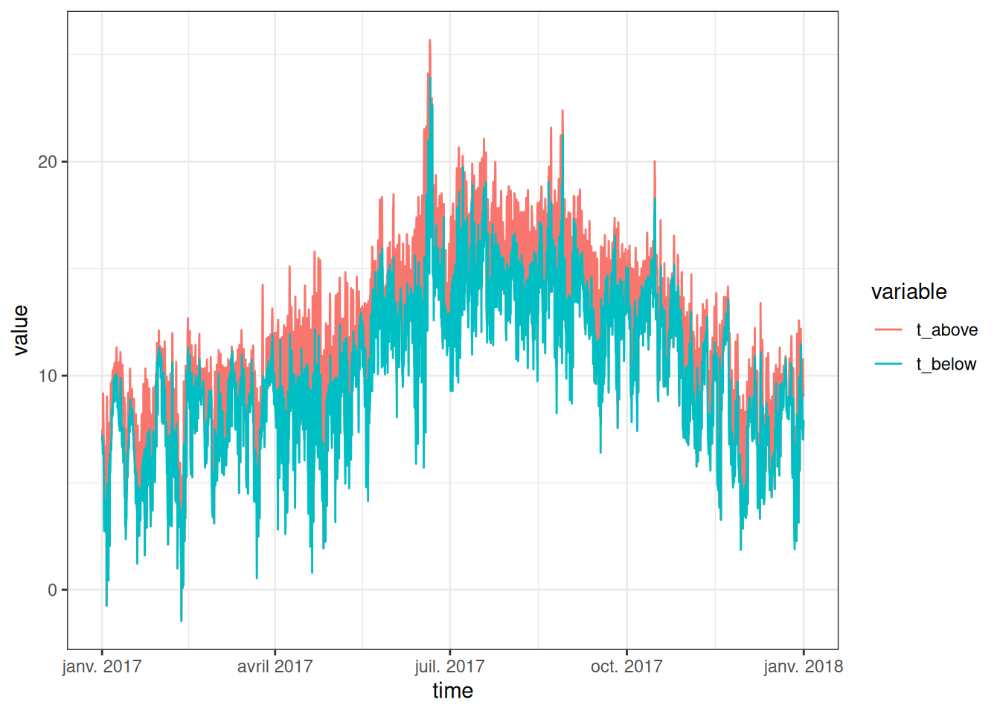
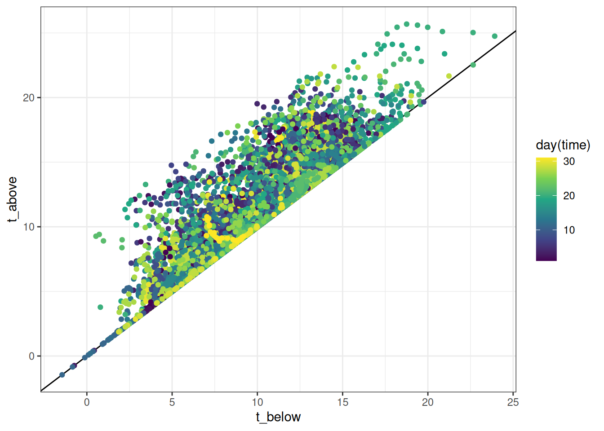
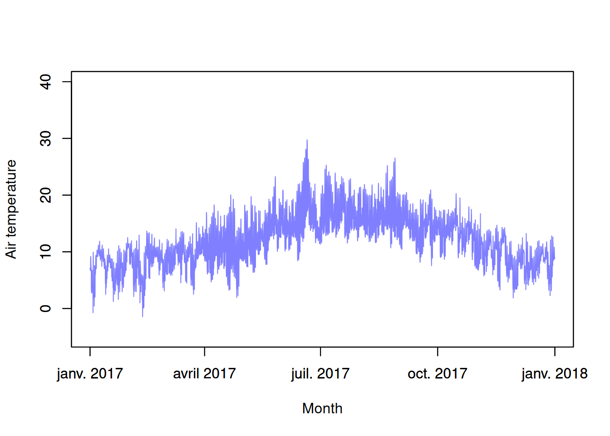

Code
climdata %>%
mutate(date = as_datetime(obs_time)) %>%
select(-obs_time) %>%
gather(variable, value, -date) %>%
ggplot(aes(date, value)) +
geom_line() +
facet_wrap(~ variable, scales = "free_y") +
theme_bw()
https://rpubs.com/ilyamaclean/1262923https://rpubs.com/ilyamaclean/1262923
climdata %>%
mutate(date = as_datetime(obs_time)) %>%
select(-obs_time) %>%
gather(variable, value, -date) %>%
ggplot(aes(date, value)) +
geom_line() +
facet_wrap(~ variable, scales = "free_y") +
theme_bw()
read_csv("data/weather.csv") %>%
select(-`...1`) %>%
gather(variable, value, -date) %>%
ggplot(aes(date, value)) +
geom_line() +
facet_wrap(~ variable, scales = "free_y") +
theme_bw()
data.frame(
values = unlist(forestparams)
) %>% rownames_to_column("parameter") %>%
knitr::kable()| parameter | values |
|---|---|
| h | 10.00 |
| pai | 4.00 |
| x | 1.00 |
| clump | 0.20 |
| lref | 0.40 |
| ltra | 0.20 |
| leafd | 0.10 |
| em | 0.97 |
| gsmax | 0.33 |
| q50 | 100.00 |
| skew | 7.00 |
| spread | 70.00 |
tibble(
pai = PAIgeometry(PAI = 8, skew = 7, spread = 70, n = 100),
h = 1:100/10
) %>%
ggplot(aes(h, pai)) +
geom_path() +
geom_point() +
theme_bw() +
coord_flip() +
xlab("Height [ m ]") +
ylab(expression("Plant Area Index [ "~m^2~m^{-2}~"]"))
library(AMAPVox)
voxels <- readVoxelSpace("data/P16_2023_4ha_buffer_HighAlt_PadHLE_intensity1m.vox")
voxels@data <- merge(voxels@data, plantAreaDensity(voxels),
by = c("i", "j", "k"))
pai <- plantAreaIndex(voxels)[["pad_attenuation_PPL_MLE.pai.ag" ]]
pai <- pai %>%
mutate(ground_distance = round(ground_distance)) %>%
filter(ground_distance <= 50, ground_distance > 0)
ggplot(data = pai, aes(x=pai, y=ground_distance)) +
geom_path() +
geom_point() +
theme_bw()
data.frame(
values = unlist(groundparams)
) %>% rownames_to_column("parameter") %>%
knitr::kable()| parameter | values |
|---|---|
| gref | 0.150000 |
| slope | 0.000000 |
| aspect | 180.000000 |
| em | 0.970000 |
| rho | 1.529643 |
| Vm | 0.509000 |
| Vq | 0.060000 |
| Mc | 0.542200 |
| b | 5.200000 |
| Psie | -5.600000 |
| Smax | 0.419000 |
| Smin | 0.074000 |
| alpha | 0.019000 |
| n | 1.310000 |
| Ksat | 6.240000 |
forestparams2 <- forestparams
forestparams2$h <- 50
forestparams2$pai <- sum(pai$pai)
forestparams2$gsmax <- 0.24
mout1 <- runpointmodel(climdata = climdata,
reqhgt = 0, # sensor height
vegp = forestparams2,
paii = pai$pai,
groundparams,
maxiter = 500,
lat =49.96807, long= -5.215668)
tibble(
time = climdata$obs_time,
t_above = climdata$temp,
t_below = mout1$tground
) %>%
mutate(time = as_datetime(time)) %>%
# filter(month(time) < 4) %>%
gather(variable, value, -time) %>%
ggplot(aes(time, value, col = variable)) +
geom_line() +
theme_bw()
tibble(
time = climdata$obs_time,
t_above = climdata$temp,
t_below = mout1$tground
) %>%
mutate(time = as_datetime(time)) %>%
ggplot(aes(t_above, t_below, col = day(time))) +
geom_abline() +
geom_point() +
theme_bw() +
scale_color_viridis_c() +
coord_flip()
library(micropoint)
# generate typical paii profile for a grass surface
# canopy divided into n = 10 layers:
paii <- PAIgeometry(PAI = 1, skew = 4, spread = 70, n = 10)
# run model for height mid-way to canopy top (6 cm above ground)
mout1 <- runpointmodel(climdata, reqhgt = 0.06, vegparams, paii, groundparams, lat = 49.96807, long = -5.215668)Warning in runchecksfun(climdata, vegp, groundp, lat, long): Downward shortwave
radiation higher than expected clear-sky radiation. Capping at clear-sky valueWarning in runchecksfun(climdata, vegp, groundp, lat, long): Diffuse radiation
higher than total downward radiation. Capping at downward radiation# run model for height 6 cm above canopy (18 cm above ground)
mout2 <- runpointmodel(climdata, reqhgt = 0.18, vegparams, paii, groundparams, lat =49.96807, long= -5.215668)Warning in runchecksfun(climdata, vegp, groundp, lat, long): Downward shortwave
radiation higher than expected clear-sky radiation. Capping at clear-sky value
Warning in runchecksfun(climdata, vegp, groundp, lat, long): Diffuse radiation
higher than total downward radiation. Capping at downward radiationtme <- as.POSIXct(climdata$obs_time)
par(mfrow = c(1, 1))
plot(mout1$tair ~ tme, type="l", xlab = "Month", ylab = "Air temperature",
ylim = c(-5, 40), col = rgb(1, 0, 0, 0.5))
par(new = TRUE)
plot(mout2$tair ~ tme, type="l", xlab = "", ylab = "",
ylim = c(-5, 40), col = rgb(0, 0, 1, 0.5))